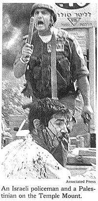
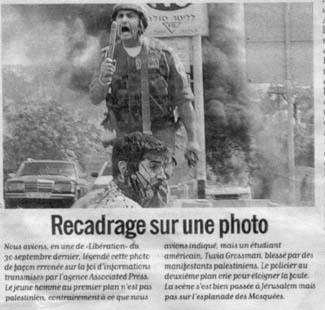

Original anglais: “Do pictures always say the truth?” Traduction française et commentaire par Menahem Macina (5 mai 2002).

Il est bien connu qu’une image en dit plus qu’un millier de mots - Mais les images disent-elles toujours la vérité? Pas toujours. Cette photographie de l’agence Associated Press a été publiée par le New York Times et le Boston Globe, soi-disant pour illustrer le passage à tabac d’un Palestinien par un policier israélien. Le fait que cette photo semble nous rapporter est celle d’un policier brutal, armé d’une matraque, dominant un Palestinien terrorisé et couvert de sang. [De fait, la légende en anglais dit textuellement: "Un policier israélien et un Palestinien sur le Mont du Temple"]. En fait, la vérité est tout autre. Le "Palestinien" est en réalité un étudiant juif de Chicago, Touvia Grossman, Lui et deux de ses amis, ont été arrachés d’un taxi par la foule palestinienne et brutalement battus et atteints de coups de couteaux. Le « brutal policier israélien » est en fait en train de les protéger de la populace. Il vaut la peine de garder la leçon en mémoire.
J’ai été projeté sous les feux de la rampe internationale lorsque le New York Times et d’autres éditions d’importants médias ont publié une photo de moi - ensanglanté et battu - aux pieds d’un policier israélien brandissant une matraque. La légende qui accompagnait la photo me présentait comme une victime palestinienne de la nouvelle intifada. Mais en réalité, je suis un Juif de Chicago, âgé de 20 ans, et j’étudie dans une yeshivah à Jérusalem. Voici comment tout cela est arrivé. C’était la veille de Rosh Hashanah, et j’ai arrêté un taxi avec deux de mes amis pour aller visiter le Mur Occidental. Durant le trajet, le conducteur a pris un raccourci par l’un des quartiers arabes de Jérusalem. Nous avons tourné à un angle de rue et soudain une quarantaine de Palestiniens ont entouré le véhicule. Avant que nous ayons compris ce qui se passait, d’énormes pierres avaient cassé toutes les vitres du taxi. Quelques Palestiniens ont ouvert la porte et m’ont tiré hors du véhicule. Une dizaine d’assaillants m’ont sauté dessus, me bourrant de coups de poings et de coups de pied. Je me suis jeté à terre et j’ai tenté de me couvrir le visage pour me protéger de mon mieux. Tout que j’ai pu voir, c’est une rafale de baskets qui me donnaient des coups de pied au visage. Alors je me suis senti empoigné par une forte paire de mains, et j’ai découvert mon visage parce que je croyais que c’était quelqu’un qui tentait de m’aider. Mais ce n’était qu’un autre Palestinien; il a tenu l’arrière de ma tête et m’a donné un coup de poing en plein visage. Je suis tombé au sol et les Palestiniens m’ont à nouveau sauté dessus. L’un d’eux m’a donné un coup de couteau à l’arrière l’arrière de la jambe, déchirant muscles et tendons. Deux autres Palestiniens me tenaient la tête, pour que je ne puisse pas bouger, tandis que deux autres me cognaient la tête avec des pierres… encore et encore. A ce moment, l’agression durait depuis environ huit minutes. J’avais déjà perdu trois litres de sang et j’étais sur le point de m’évanouir. J’ai récité le Shema Yisrael - la profession de foi que le Juif récite avant de mourir. J’essayais de ne pas m’évanouir, parce que j’étais sûr que, dans ce cas, ce serait la fin. Comme c’était la veille de Rosh Hashanah, l’image d’un shofar a surgi dans mon esprit, et je me suis souvenu d’une histoire biblique que j’ai apprise à l’école. Le prophète Gédéon et ses 300 hommes étaient en état de très grande infériorité numérique face à l’armée des Madianites, qui comptait 130.000 hommes. Alors, les troupes de Gédéon s’étaient mises à tambouriner sur des pots et à sonner du shofar, dans l’espoir que le bruit effrayerait l’ennemi. Avec l’aide de Dieu, le stratagème a fonctionné, et Gédéon a gagné la bataille. Du coup, je me suis mis à hurler à pleins poumons. Les Palestiniens ont été momentanément désorientés, et j’ai pu me lever et m’enfuir. Malheureusement, je suis très myope et mes verres de contact étaient tombés. C’est ainsi que - à peine capable de voir quoi que ce soit, le sang ruisselant de mon visage et ma jambe sévèrement blessée - je fus pourchassé jusqu’au sommet d’un talus par 40 Palestiniens qui me jetaient des pierres.
Par miracle et sans savoir de quelle manière, je parvins à les devancer et à atteindre une station d’essence où des soldats israéliens étaient en faction. Je m’effondrai sur le sol, et c’est alors qu’un groupe de photographes indépendants se mit à prendre des clichés. Un policier israélien me protégeait, hurlant aux Palestiniens de cesser le lynchage. Mais la photo - envoyée dans le monde entier par l’Agence Associated Press - m’a désigné comme étant un Palestinien. Le sous-entendu évident était que le policier israélien venait juste de me frapper. En fait, c’était exactement le contraire. J’étais la victime juive d’assaillants palestiniens. Il est déjà pénible d’être battu jusqu’au sang, d’avoir des points de suture du haut en bas de la tête, et la jambe si sévèrement poignardée qu’une thérapie a été nécessaire pour que je puisse en recouvrer l’usage. Mais servir de pion dans la guerre médiatique, en tant qu’élément de la propagande palestinienne pour lui gagner la sympathie internationale, croyez-moi, c’est encore plus blessant. Quand une photo est publiée, beaucoup de facteurs interviennent dans le processus de transmission de l’information, et, en l’occurrence, j’ignore quelle a été la cause de la légende déformée qui accompagnait le cliché. Mais il est profondément troublant que le New York Times, l’Agence Associated Press (et tous les intermédiaires) aient supposé que si victime il y a, ce doit être un Palestinien. Une grande bataille se déroule ici, en Israël, et cet événement illustre le pouvoir qu’ont les médias d’influencer l’opinion publique. Si la vérité doit prévaloir, nous ne pouvons pas nous contenter de "lire" le journal. Il faut discerner et prendre part au processus. Sinon, vous n’êtes que l’objet passif du but poursuivi par quelqu’un d’autre. Qui sont les victimes innocentes et qui sont les agresseurs? J’en suis la preuve vivante - la vérité est souvent l’inverse de ce qu’elle apparaît être.
© Touvia Grossman
A l’époque des faits (30 septembre 2000), on en a abondamment parlé dans la presse, puis on a oublié. Et ce d’autant plus vite que la relation de l’incident n’était pas à l’honneur de la presse. Libération - qui n’avait pas vérifié l’information avec tout le sérieux qu’on est en droit d’attendre d’un quotidien qui se veut fiable, a piteusement reconnu les faits et à vite glissé vers d’autres bassesses (en publiant une caricature à relents antisémites aux dépens de Sharon). Auparavant, la même ‘erreur’ avait été commise par le New York Times et le Boston Globe. Ce qui est grave, dans cette affaire, c’est la précipitation dont fait preuve la presse dès qu’il s’agit de crier "haro sur le baudet"… juif. En effet, le b-a-ba du journalisme d’investigation eût commandé de faire déchiffrer l’inscription en hébreu qui figure sur le panneau routier, que l’on distingue nettement sur la photo, en arrière-plan du visage du policier israélien venu porter secours à Touvia Grossmann, un étudiant juif américain (et non un ‘pauvre’ manifestant palestinien). Mais, objectera-t-on peut-être, les journalistes occidentaux ne sont pas obligés de connaître l’hébreu… Argument ridicule: on sait, en effet, qu’il y a, dans les salles de rédaction l’un ou l’autre Juif (pour la propagande arabe, il n’y a qu’eux dans la presse!), ayant des rudiments d’hébreu ou, à défaut, des amis, parents, ou relations, capable de traduire une inscription routière… Il suffisait de demander. Last but not least, aucune connaissance de la langue hébraïque n’est nécessaire pour reconnaître un panneau de signalisation routière (voir, ci-dessous la photo, où l’on distingue même le bas du chiffre de la limitation de vitesse, qui devait être parfaitement lisible sur le cliché original; lequel a été soigneusement cadré - mais pas assez cependant - pour faire disparaître complètement cette preuve flagrante de la désinformation inhérente à toute l’opération).

Et se peut-il qu’un journaliste ignore que l’Esplanade du Temple (euh, pardon, des Mosquées…) - l’un des endroits les plus photographiés du monde, n’est ni une route, ni un carrefour de circulation, et ne peut par conséquent s’orner d’un panneau de signalisation routière?
Texte initialement publié sur mon site debriefing.org. Mis en ligne sur Academia.edu, le 3 mars 2016.